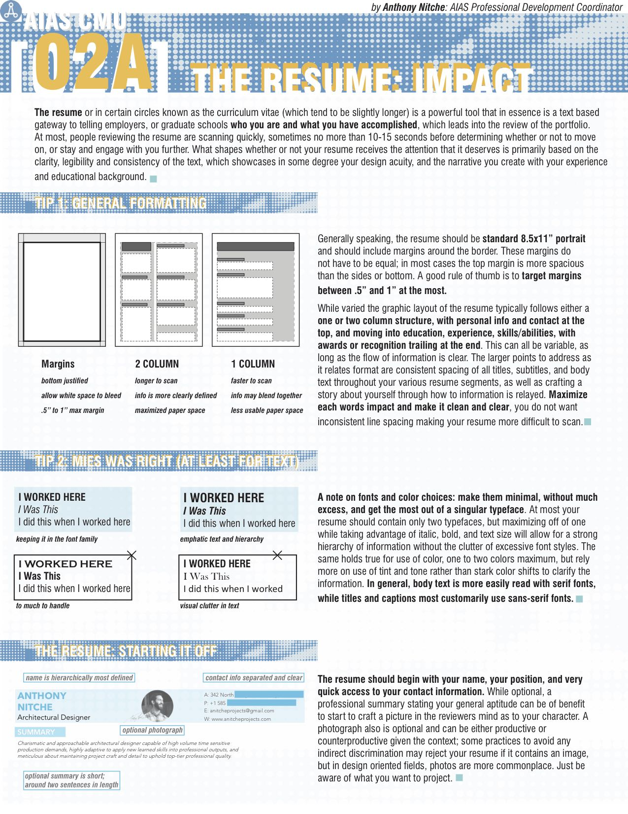

Created by our 2017-2018 Professional Development Coordinator, Anthony Necci Nitche, these newsletters are a collection of important information that any architecture student, both incoming and graduating, should know!

About YAF from YAF themselves: The AIA Pittsburgh’s Young Architects Forum (YAF) seeks to support and encourage young professionals in the field of architecture to obtain their license, become more involved with career development opportunities, and engage allied professionals through collaboration. We continuously seek out new and fresh ideas and the energy and resources to implement them, and have fun doing it.
Our chapter is always looking for ways to bring in professionals and young architects to network, talk about their experiences, and work with us. Our AIA-YAF Liaison attends meetings with YAF every week and creates events in conjunction with them to provide more professional programming for our members. Events include our annual CRIT night, after-lecture mixers, YAF Storeytelling, and Networking with YAF.
Learn more about YAF
here.
A book list of architectural topics that you may like. Enjoy! :)
- Architecture of Happiness, Alain de Botton
Subject: Phenomenology
- 101 Things I Learned in Architecture School, Matthew Frederick
Subject: Education + Learning
- Manual of Section, Lewis Tsurumaki Lewis
Subject: SpaceMaking Tools
- Graphic Design For Architects, Karen Lewis
Subject: Document Layouts
- Materials, Structures, And Standards: All The Details Architects Need To Know But Can Never Find, Julia McMurough
Subject: Design Tools + Industry Standards
- Architectural Regionalism: Collected Writings on Place, Identity, Modernity, and Tradition, Vincent Canizaro
Subject: Regionalism and Place
- Architecture: From Commission to Construction, Jennifer Hudson
Subject: Construction Drawing + Photography
- Expanding Architecture: Design as Activism, Bryan Bell; Katie Wakeford
Subject: CoPublic Interest Design
- Material Innovation: Architecture, Andrew Dent; Leslie Sherr
Subject: Architectural Materials
- The Fountainhead, Ayn Rand
Subject: Ego Integrity and Self
- The Diagrams of Architecture: AD Reader, Mark Garcia
Subject: Diagramming
Any recommendations for readers like you? Email us to add it to the list!
aiascmu@gmail.com